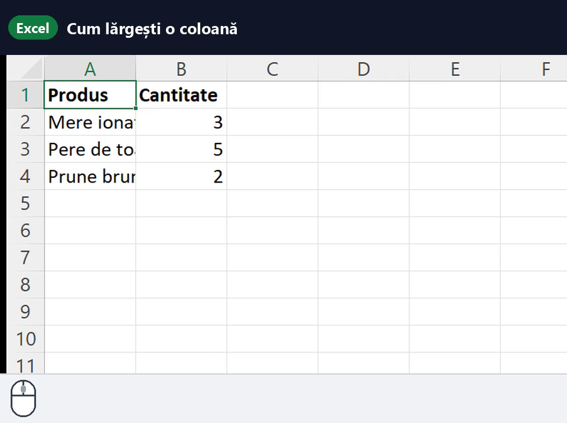
Cum lărgești o coloană
Tragi de linia dintre două coloane, sus, în antetul coloanelor.
2 pași · 21 s
Filme scurte, făcute în Excel-ul adevărat. Filmul se oprește după fiecare pas, ca să-l faci și tu.
Filmele sunt făcute în Excel cu meniurile în engleză. În texte, numele românesc al comenzii vine primul, cel englezesc în paranteză: Însumare automată (AutoSum). În funcții, Excel desparte valorile cu punct și virgulă (;) pe calculatoarele cu setări românești și cu virgulă (,) pe cele cu setări în engleză.

Tragi de linia dintre două coloane, sus, în antetul coloanelor.
2 pași · 21 s
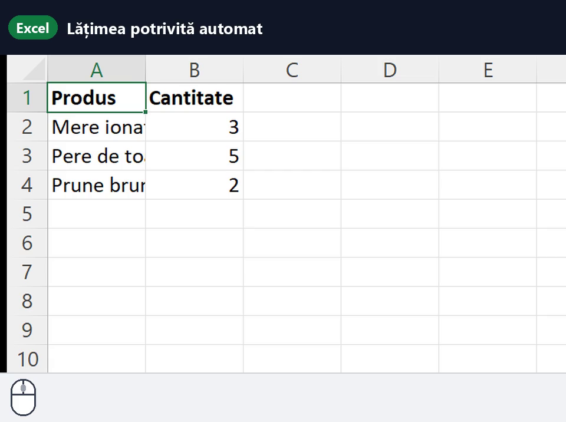
Dublu-clic pe linia dintre două coloane, iar Excel potrivește lățimea după cel mai lung text.
2 pași · 20 s
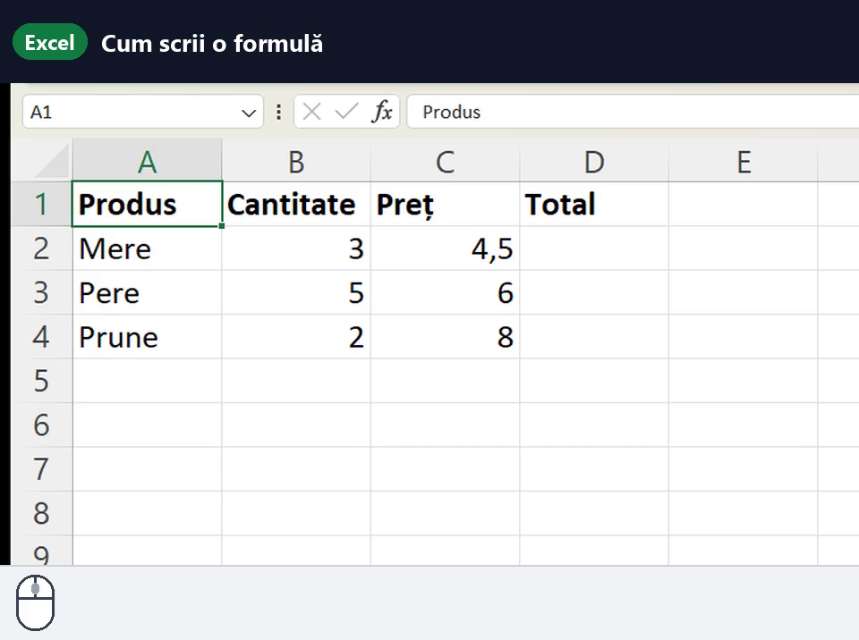
Formula începe cu semnul =, apoi scrii celulele și operația. Enter o termină.
4 pași · 34 s
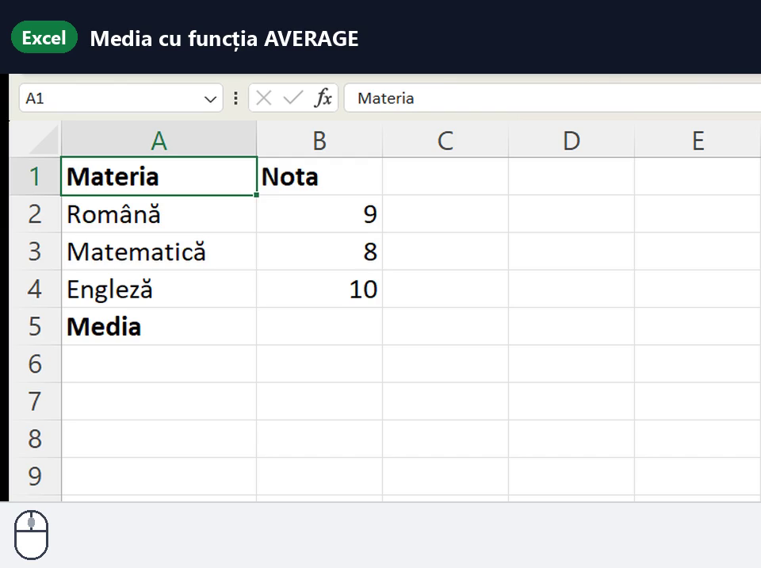
Scrii numele funcției, selectezi notele cu mouse-ul, închizi paranteza și apeși Enter.
5 pași · 35 s
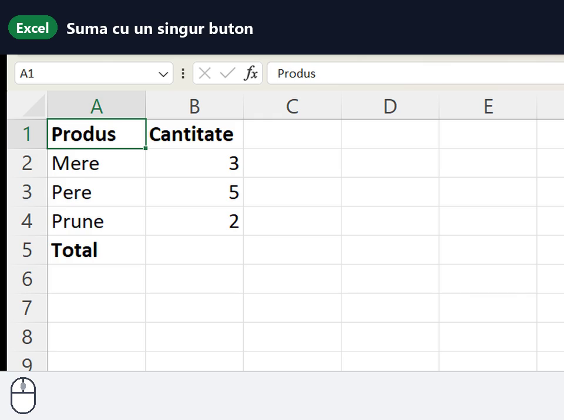
Butonul Σ Însumare automată (AutoSum) scrie singur formula de adunare.
3 pași · 24 s
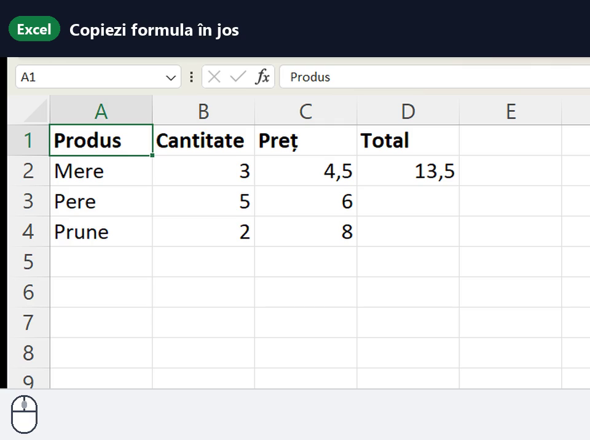
Tragi de pătrățelul din colțul celulei (instrumentul de umplere, Fill Handle).
4 pași · 40 s
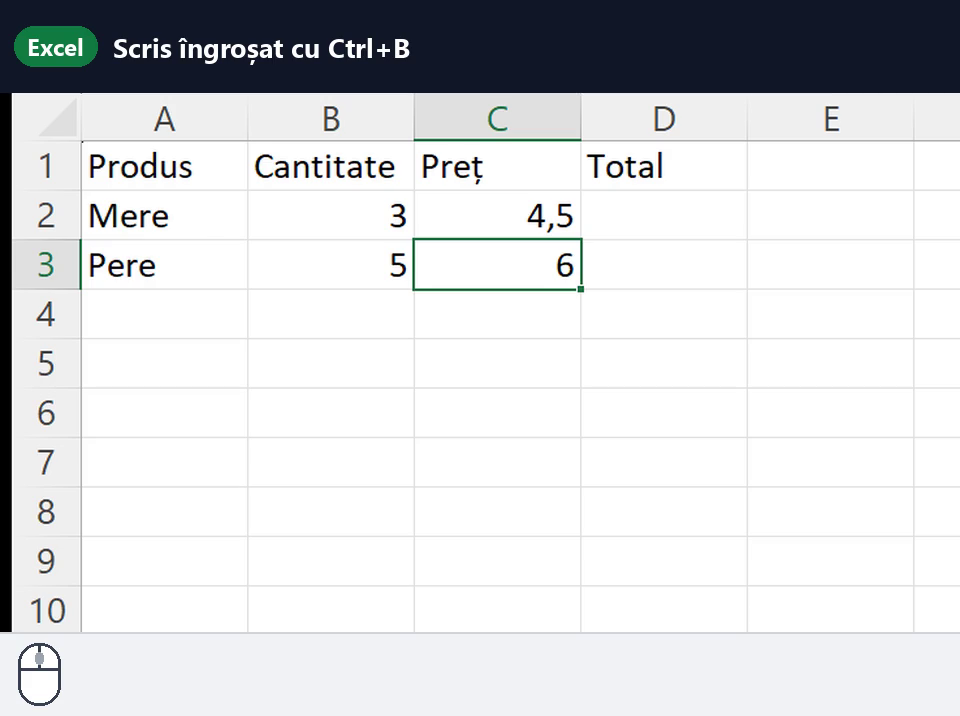
Selectezi capul de tabel și apeși Ctrl+B (Aldin, Bold).
3 pași · 22 s
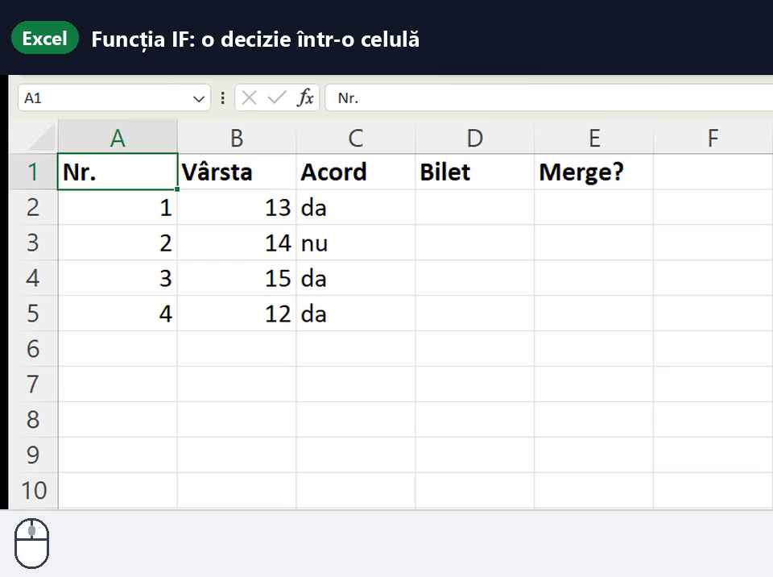
Scrii =IF(condiția;dacă da;dacă nu), iar Excel alege singur ce arată celula. Pe setări englezești: virgulă în loc de ;
7 pași · 52 s
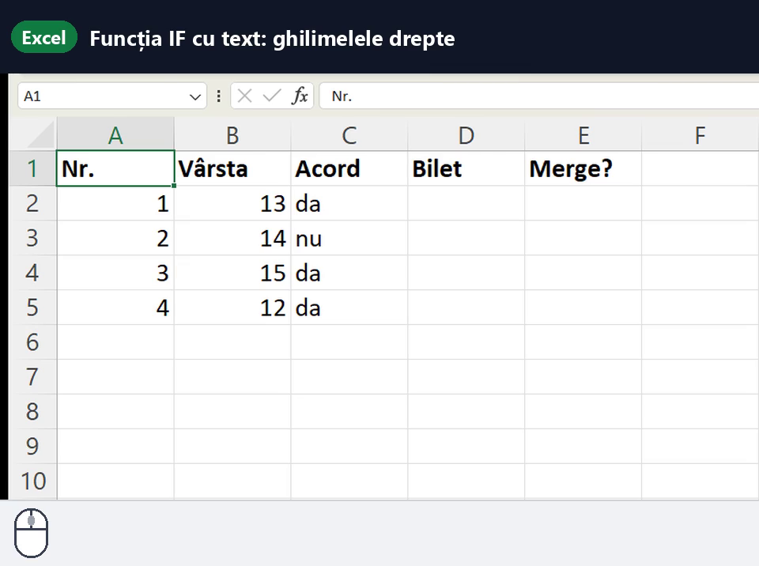
Textul din formulă stă între ghilimele drepte: "da", "merge". Fără ele, Excel caută un nume și dă #NAME?
6 pași · 42 s
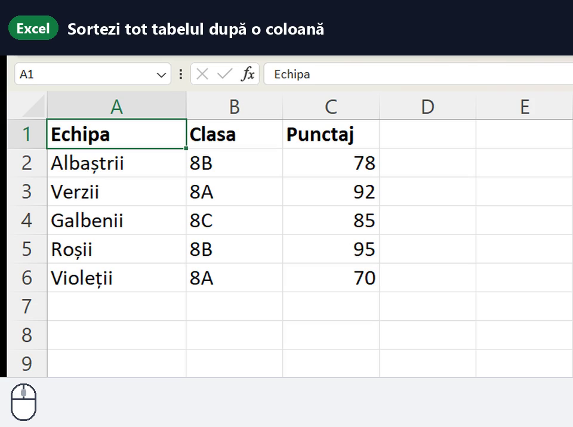
Un clic pe o singură celulă din coloană, apoi butonul de sortare din fila Date (Data). Rândurile se mută întregi.
3 pași · 32 s
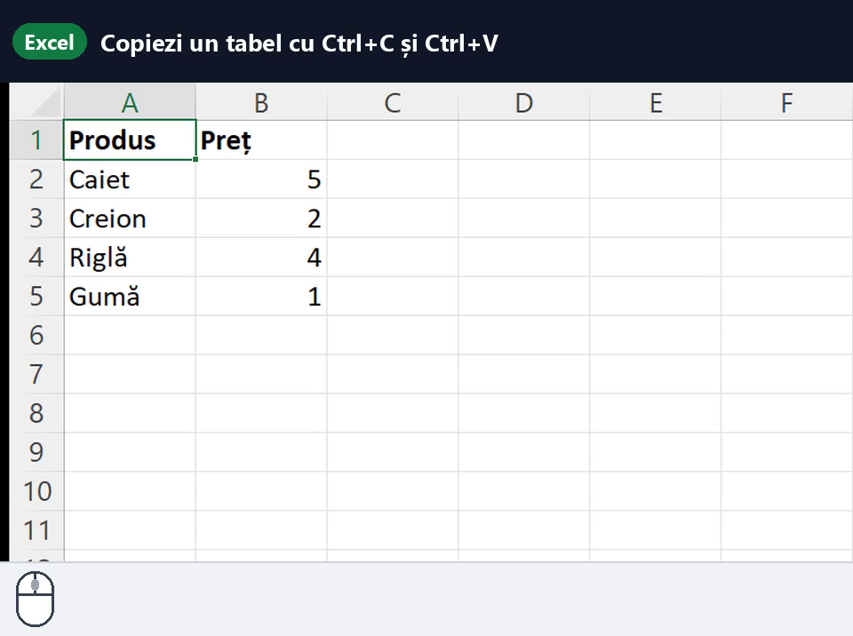
Selectezi, Ctrl+C (Copiere), clic în locul nou, Ctrl+V (Lipire). Originalul rămâne pe loc.
5 pași · 46 s
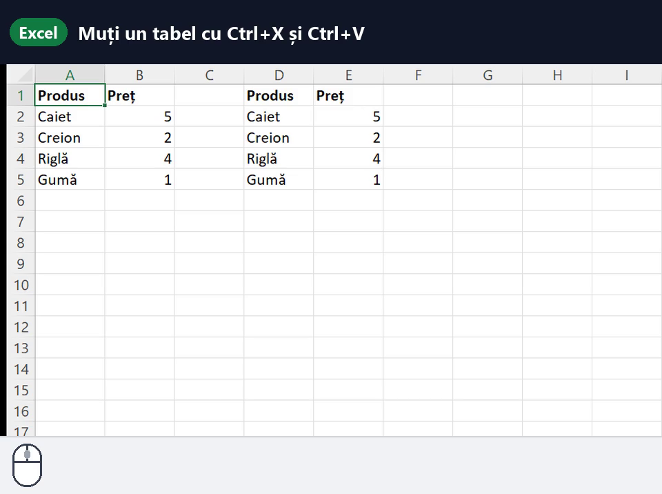
Selectezi, Ctrl+X (Decupare), clic în locul nou, Ctrl+V (Lipire). Locul vechi rămâne gol.
4 pași · 38 s
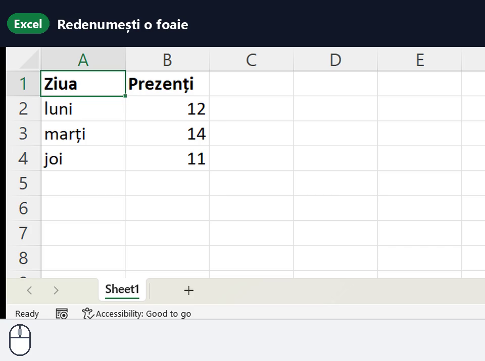
Dublu-clic pe fila foii, jos, scrii numele nou și apeși Enter.
4 pași · 24 s